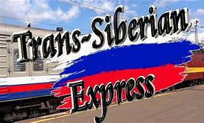
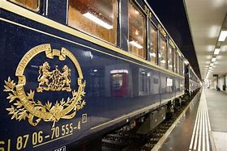
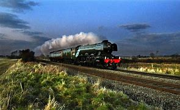
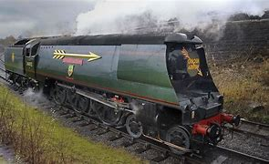
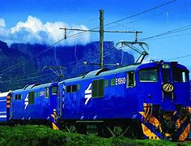
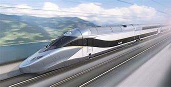
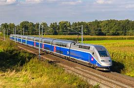
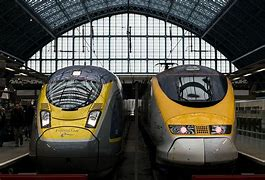

Trans-Siberian Express
Trans-Siberian Express – Built between 1891 to 1916 by order of the Russian Tsars Alexander III and his son Nicholas II, this largest railroad network in the world instantly became one of the most famous travel routes in the world. Connecting the main railway station in Moscow to the 9289km away city of Vladivostok, this impressive rail network became one of the easiest ways to travel across the vast expanses of Russia. Today, the trip from Moscow to Vladivostok on board the Trans-Siberian Express train “Rossiya” and “Golden Eagle” lasts 6 days and 4 hours, and the forked rail network at Ussuriysk enables the trains to travel further 3 days toward south, across the border of North Korea and straight to their capital of Pyongyang.

Orien Express
Orient Express is without the doubt one of the most famous trains of all time. The real reason for its popularity lies in its level of service and the popular stories that were centered around it (most famously by a detective novel “Murder on the Orient Express” written by Agatha Christie). The train was built and maintained as one of the most premium railway trains in the world at that time, offering high-end service and comfort for wealthy and business passengers that traveled between cities of Paris and Istanbul (then known as Constantinople). The original route was maintained between 1883 and 1977, switching to the shorter trips between Paris and Vienna. Eventually, after its schedule covered shorter and shorter routes, the name Orient Express disappeared from the European train schedules on 14 December 2009.

Flying Scotsman
Flying Scotsman is the most famous train in Great Britain which connected the capitals of England and Scotland on a daily basis ever since 1862. During early decades, the travel time between London and Edinburgh was 10 and a half hours, but that time was eventually cut down by two hours. During the century and a half of service, this train line received many upgrades, with the latest modernization enabling it to finish its journey of 392 miles in just a 4 hours.

Golden Arrow
After the success of luxury train line, Orient Express, train and railway company Compagnie Internationale des Wagons-Lits (CIWL) decided to expand their presence and offer similar high-end lines all across the Europe. One of their most successful attempts was Golden Arrow, a fast passenger train that operated between Victoria Station in London to the coastal town of Dover, where passengers could board the ferry that would carry them to the France and the train with the same name (La Flèche d’Or which translates to The Golden Arrow) on their way to Paris. The line remained active until 1971.

Blue train
The art of luxury travel that was practiced by the CIWL company (who created and operated the lines of Orient Express and Golden Arrow) was perfected with Blue Train. Often promoted as “ magnificent moving five-star hotel”, Blue Train offers an unparalleled level of high-end service on its journey between the South African capital of Cape Town and the city of Pretoria. In its modern configuration, it offers butler service, fully soundproofed cars, elegantly designed interiors, fully carpeted compartments and the wide array of cars for entertainment (lounges, observation decks and more).

Bullet Train
The increasing need for evolving public transport pushed Japan into creating Shinkansen, a network of train lines specifically created for high speed in 1964. The trains on that high-speed network gained nickname Bullet Trains, and in the following decades, both the trains and the railway network received numerous upgrades. Conventional rail trains can reach maximum operating speeds of 240-320km/h, while one line that uses maglev technology (Tokyo-Nagoya) can reach up to 603km/h.

TGV
The pride of France train network TGV (Train a Grande Vitesse, translated to “high-speed train”) was built in the 1970s as a solution for transporting people between major cities with speeds of up to 320km/h and sometimes average trip speeds of almost 280 km/h. The great success of the commercial use of TGV in 1981 caused large expansion of high-speed railway lines across the France. Neighboring countries such as Spain, Italy, and Germany quickly emulated France by building their high-speed network lines, but none of them managed to find the worldwide fame as TGV.

Eurostar
The difficulties of travel between England and France caused authorities to invest billions of euros into the construction of the 50.5-kilometer long underground tunnel under English Chanel and implementation of the famous high-speed Eurostar train line that connects London and Paris. Currently, the travel time of Eurostar between those cities is 2 hours and 15 minutes. The average speed of Eurostar is around 300 km/h, except during the passage through Channel Tunnel where the speed is reduced to 160 km/h for safety reasons.
